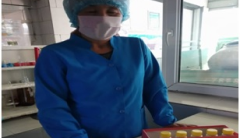
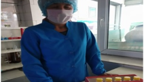

Платформа качества молока и цифровизация на ЗАО «Ак-Жалга»
Еще в советское время, те далекие 1964 году, в одной из самых красивых местностей Кыргызстана, на берегу прекрасного озера Иссык-Куль был основан завод по производству молочных изделий «Ак-Жалга». Молокоперерабатывающий завод «Ак-Жалга» расположен в селе Кызыл-Суу, Джеты-Огузского района, в 35 км от города Каракол. После развала СССР приватизирован и преобразован в закрытое акционерное общество. Производство располагаетсяв уютном, экологически чистом уголке Иссык-Кульской области, что гарантирует безопасность и чистоту сырья производимых продуктов. Оснащенный всем необходимым для соблюдения самых высоких требований, завод занимает площадь более 5 гектаров и состоит из нескольких производственных помещений и хранилищ Производственная мощность завода - до 100 тонн молока в сутки. Летом завод перерабатывает до 100 тонн, зимой - 30-40 тонн. Время не стоит на месте и за эти годы изменилось технологии производства, методы поставки сырья и формы управления персоналом и процессами. Сегодня завод «Ак-Жалга» - одно из крупнейших производств пищевых продуктов на территории Кыргызстана. Где, руководителем является «Заслуженный работник промышленности», обладательница ордена «Манас 3-й степени», медали «Данк» и Почетной грамоты Кыргызской Республики ЖузумалиеваКулийпаЖузумалиевна. Под ее чутким и профессиональным руководством, предприятие работает в унисон со временем. Модернизированное оборудование новейшие технологии дают возможность предприятию выпускать качественную продукцию, сохраняющую все свои полезные свойства и компоненты.Каждый день дружный коллектив завода выполняет новые задачи поставляя на рынок более 20 наименований молочной продукции. Каждый сезон расширяется ассортимент продуктов. Твердые и мягкие сыры, свежее сливочное масло, натуральная сметана, творог и кефир. В год ЗАО «Ак-Жалга» выпускает 700 000 тонн сыров, 300 000 тонн сливочного масла, 60 000 тонн сметаны и творога, 120 000 тонн кефира. Молочную продукцию «Ак-Жалга» ценят и любят не только в Кыргызстане, но и соседние страны как Казахстан и Россия предпочитают покупать натуральную продукцию нашего завода. Предприятие постоянно следит за стандартами качества молочной продукции. В 2014 году предприятие получил международный стандарт ISO22000. Система управления качеством на предприятии организовано четко и чувствуется вовлеченность самого руководителя, что чрезвычайно важно, как она поддерживает и мотивирует своих сотрудников.

 
